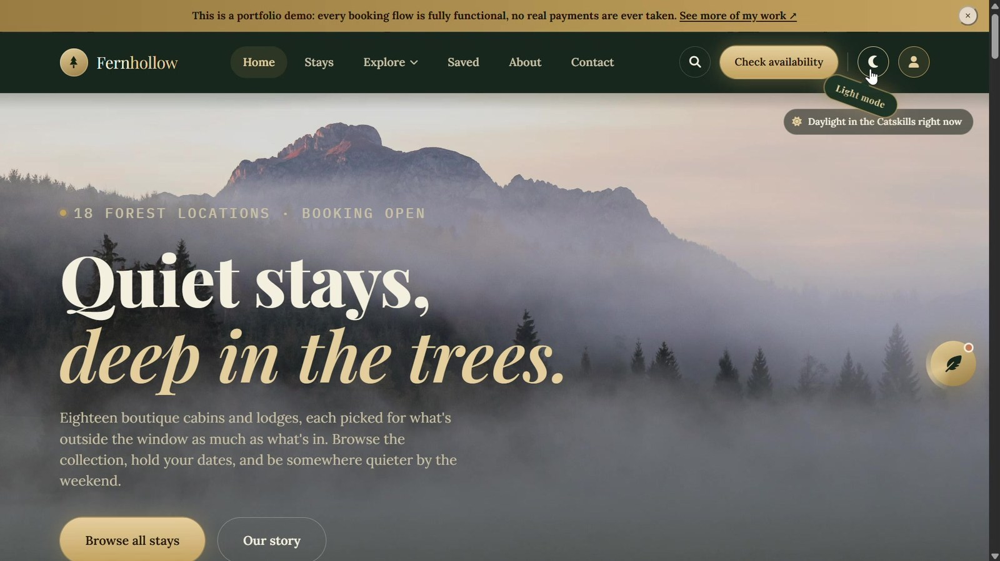

Eleven live projects, built for the range they cover.
Some run on a full Postgres backend with real payment infrastructure. Others are plain hand written HTML with no backend at all. Both are the right choice, depending on what the project actually needed.
A multi tenant task platform with a real Postgres backend. 24 Supabase Edge Functions handle a two sided marketplace with payment webhooks and payout release, an AI board assistant with its own embedding generation function, Slack slash commands, Zapier triggered task creation, two way Google Calendar sync, and notifications across push, SMS, and an AI written daily digest email. A separate client portal lets people outside the team act on a board.

A production e commerce platform for a real, currently trading business selling bags, shoes, clothing, and slippers. Built in React and Vite with a live Paystack integration: real checkout, a payment webhook, and refund handling. A working admin panel manages the catalog, and customers can track their own orders.

Built during frontend training, 2025, to sharpen skills more than for a client: a clean, structured product layout with a shopping experience tuned for both phone and laptop from day one. Kept live as it is, unmodified, as an honest record of that stage of training.

A trustworthy, easy to navigate marketing site for a home healthcare provider, built during frontend training in 2025. Disease management program listings written to reassure rather than overwhelm, plus a working request information form connecting visitors directly to the care team.

Rebuilt for a real freight forwarding and customs clearance company: 24 pages, real company photography, a real 4 post blog. The shipment tracking page pulls a live exchange rate from the Frankfurter API and reads shipment status from a Google Sheet, auto detecting the carrier by pattern matching the tracking number.

A 21 page site for an African food export company, with real structured data (Organization and FAQPage schema). No fabricated client logos: a Trusted By strip with no real logo files behind it was replaced with badges the business could actually verify, including CAC registration, NEPC registration, and its established year.

Built for a specialist working one to one with children with autism, Down syndrome, and developmental delays. A Decap CMS lets her publish articles without touching code, Cloudflare R2 stores her media, and a password gated private section, sitting behind a Cloudflare Worker, keeps sensitive case material access controlled on the server.

A sneaker e commerce concept with a full shopping experience: catalog, cart, a three step checkout wizard, accounts, and a Build Your Own configurator. Plain HTML with Tailwind CDN and hand written JavaScript, deliberately no framework and no backend, with every order living in the browser's local storage.

A 29 page booking site demo, honest in its own documentation about being a demo with no real payments or server. Ten features avoid paid APIs entirely by computing real alternatives instead: solar position math for sunrise and sunset, the Web Audio API for an ambient soundscape, speechSynthesis for a voice walkthrough, and a rule based, not AI, concierge. A full gift registry supports real create, edit, delete, and view actions.

A 22 page, fully animated, installable nonprofit concept site. It is a portfolio concept rather than a real nonprofit relationship, and uses placeholder photography rather than real client photos. A right side sliding mobile menu was rebuilt after a real bug was diagnosed: a backdrop filter on the header was breaking the positioning of fixed elements inside it, the same root cause later found again on ShelemJ.

An analytics dashboard interface with no backend, built as a showcase of interaction detail rather than a working product: a hero mockup that leans back and shrinks on scroll, tracked on a separate transform layer from its pointer tilt so the two never fight, custom chart tooltips replacing the browser's native ones, and cascading table row reveals across every data page.